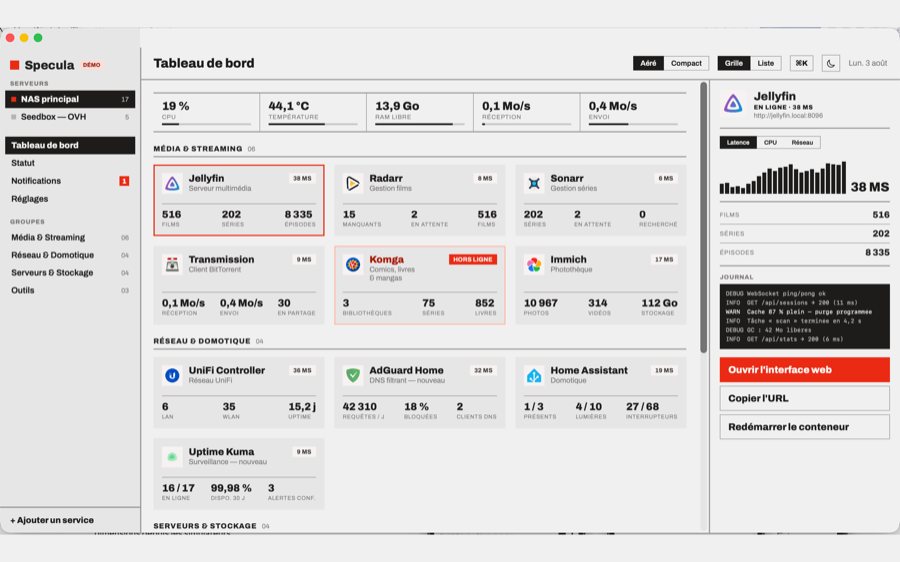

Specula
Ton homelab en un coup d'œil
Tableau de bord natif pour les services que tu héberges toi-même — iPhone, iPad et Mac. Il te dit lesquels tournent, lesquels rament et lequel vient de tomber.

Ce que ça fait
- Les vraies métriques de plus de soixante services, lues via leur API : films et séries de Jellyfin, photos d'Immich, requêtes bloquées d'AdGuard, espace libre du NAS, téléchargements en cours.
- Détection de panne après trois tentatives : notification, Live Activity, et un mur de statut qui garde trente jours d'historique.
- Démarrage en trois minutes : scan Bonjour du réseau, import d'un
services.yamlau format gethomepage.dev, ou saisie manuelle. - Widgets alimentés par l'état réel, sur l'écran d'accueil comme sur l'écran verrouillé.
Ce que ça ne fait pas
Pas de compte, pas de serveur intermédiaire, pas de télémétrie. L'app interroge tes machines directement, et tes clés API restent dans le trousseau de ton appareil. Voir la politique de confidentialité.
Compatibilité
iOS et iPadOS 26, macOS 26. Français, anglais, espagnol, chinois simplifié et arabe.
Le même lien TestFlight sert l'iPhone, l'iPad et le Mac.